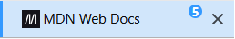

Quick start for Firefox
Install TabJump, open several tabs, assign one or more tabs to slots, then jump between them using the shortcut keys or the popup menu.
Using the Keyboard
- Assign the current tab. Press one of the pre-configured assignment keys to assign the current tab to a jumpslot.
- Assign other tabs. Repeat the previous step, assigning additional tabs to other jumpslots.
- Jump to an assigned tab. Press one of your assigned shortcuts to jump to the desired tab. If you are using Tree Style Tab, it will be easy to identify which tabs are assigned to jumpslots. But if you aren't, you can always open the popup screen to see which tabs are currently assigned.
- Adjust shortcuts and options. Open Options from the popup, then use Manage Extension Shortcuts if you want global keyboard shortcuts.
Using the Popup Menu
- Open the TabJump popup. Click the TabJump toolbar button, or use the open-popup shortcut if it is assigned (Alt + J for Windows/Linux or Ctrl + J for MacOS).
- Assign the current tab. Click Assign next to a slot, or press A and then a number from 1 to 9 while the popup is open.
- Jump to an assigned tab. Click the slot number, or press a number from 1 to 9 while the popup is open.
- Adjust shortcuts and options. Open Options from the popup, then use Manage Extension Shortcuts if you want global keyboard shortcuts.
Core concepts
Jump slots
A jump slot is a temporary shortcut, numbered 1 through 9, which can be assigned to any open tab, accessible via a shortcut key. Slot 2 can point to your issue tracker, Slot 3 can point to documentation and Slot 4 can point to a local test page, etc.
Temporary by design
TabJump is for the set of tabs you're actively working with in the moment, and you can redefine that set of tabs as you go about your work. They are not intended to be long-term shortcuts, so closing an assigned tab clears that slot and restarting the browser clears all slots.
Keyboard-first...
Assign your tabs with a quick assignment shortcut key, and jump to them as needed using the associated jump shortcut key. This is very fast and very efficient.
There is also a shortcut panel if you prefer something more visual.
Optional Slot Number Badges
TabJump works best with the Tree Style Tab (TST) vertical tab add-on, which can optionally show visual slot badges in the TST sidebar. For example, press Alt+5 to access this tab:

Install TabJump
Install from Firefox Add-ons
- Open the TabJump listing on Firefox Add-ons.
- Choose Add to Firefox.
- Confirm the permission prompt.
- After installation, keep the toolbar button visible if you plan to use the popup often.
First run
After installing TabJump, start by opening a few ordinary web tabs. The add-on is easiest to understand when you have several real tabs open.
- Open the toolbar popup. Click the TabJump toolbar icon. If you do not see it, open your browser’s extensions menu and pin or show TabJump on the toolbar.
- Assign your first slot. Go to a tab you want to revisit, open the popup, then use Assign beside Slot 1.
- Assign a second slot. Switch to another tab and assign Slot 2.
- Jump back and forth. Open the popup and press 1 or 2. The popup jumps to the selected tab and closes.
Example Jump Slots:
Configure options
Open the popup and choose Options, or use your browser’s extension management page to open TabJump’s options page.
Slot Scope
Choose whether slots are shared across all windows or separated by browser window.
| Mode | What it does | Good for |
|---|---|---|
| Global across all windows | One set of Slots 1-9 for the whole browser. | Simple workflows where you want Slot 1 to mean the same thing everywhere. |
| Per-window slots | Each browser window gets its own Slots 1-9. | Separate projects, research sessions, or workspaces in different windows. |
Shortcuts
The Manage Extension Shortcuts button opens your browser’s shortcut-management page. Use it to change or restore global keyboard shortcuts.
The Open Popup as Tab button opens the popup as a normal browser tab. This is useful when reading the built-in help or testing the popup while developer tools are open.
Tree Style Tab Badges
In Firefox, TabJump can show slot badges inside the Tree Style Tab sidebar. This option is hidden or disabled in browsers that do not support the Tree Style Tab integration.
Feedback
- Briefly flash tab assignments on the TabJump toolbar icon shows short toolbar badge feedback after assignment changes.
- Show desktop notifications when assigning or unassigning slots shows system notifications for assignment feedback when supported by the browser and operating system.
Data
Clear All Jump Slots removes all current slot assignments. It does not close tabs and does not delete browsing history.
Using the popup
The popup is the main TabJump interface. It works in Firefox, Chrome and Chromium.
Mouse workflow
- Open the popup (typically with Alt-J
- Click a slot number to jump to that assigned tab.
- Click Assign to assign the current tab to that slot.
- Click Unassign to clear that slot.
- Click Unassign Current Tab to remove the current tab from whatever slot it occupies.
- Click Clear All to clear the visible assignment set. In per-window mode, this clears the current window’s slots.
Fast popup keyboard workflow
These shortcuts work only while the TabJump popup is open.
Other popup shortcuts
- H toggles Help and Back.
- O opens Options.
- Escape cancels the current popup shortcut mode or closes the help view.
Keyboard shortcuts
TabJump has two kinds of keyboard shortcuts: shortcuts in the popup and browser-level shortcuts.
Popup shortcuts
Popup-local shortcuts are the most predictable way to use TabJump from the keyboard. See Using the Popup for more information.
Browser shortcuts
Browser-level shortcuts are the fastest way to navigate around your jump slots, and work even when the popup is closed. While defaults are set when you install the extension, the browser ultimately controls which shortcuts are available; so if a shortcut does not work, open Manage Extension Shortcuts and assign a different key combination.
Firefox default shortcuts
| Action | Windows/default | Linux | macOS |
|---|---|---|---|
| Open TabJump popup | Alt+J | Alt+J | Ctrl+J |
| Jump to Slot 1-9 | Alt+1 ... 9 | Ctrl+1 ... 9 | Ctrl+1 ... 9 |
| Assign current tab to Slot 1-9 | Alt+Shift+1 ... 9 | Ctrl+Shift+1 ... 9 | Ctrl+Shift+1 ... 9 |
| Unassign current tab | Alt+Shift+0 | Ctrl+Shift+0 | Ctrl+Shift+0 |
Chrome and Chromium shortcuts
Chrome (and other Chromium-based browsers) only allow four default shortcut keys for any extension, so you will need to assign yours manually. Open chrome://extensions/shortcuts, find TabJump, then set the shortcuts you want. It is highty suggested that you assign your additional shortcut keys to the other slots to maximize your experience.
Here are the four allowed defaults:
| Action | Windows/default | Linux | macOS |
|---|---|---|---|
| Open TabJump popup | Alt+J | Alt+J | Ctrl+J |
| Jump to Slot 1 | Alt+1 | Alt+1 | Ctrl+1 |
| Assign current tab to Slot 1 | Alt+Shift+1 | Alt+Shift+1 | Ctrl+Shift+1 |
| Unassign current tab | Alt+Shift+0 | Alt+Shift+0 | Ctrl+Shift+0 |
Tree Style Tab badges
Firefox users who use Tree Style Tab can enable slot badges in the Tree Style Tab sidebar. These badges show the slot number beside assigned tabs.
- Install and enable Tree Style Tab in Firefox.
- Open TabJump Options.
- Enable Show Jump Slot badges in Tree Style Tab.
- Assign a tab to a slot. The matching TST sidebar tab should show a compact badge.
Global and per-window slots
Slot scope controls whether slots are assigned to individual windows or to all windows.
Global slots
Global mode gives the whole browser one Slot 1, one Slot 2 and so on. If Slot 1 points to a tab in Window A, pressing Slot 1 from Window B still jumps to that tab in Window A.
Per-window slots
Per-window mode gives each browser window its own Slot 1-9 map. Slot 1 in Window A can point to a documentation tab, while Slot 1 in Window B can point to a different tab for another project.
Moving assigned tabs between windows
In per-window mode, a moved tab keeps its slot number. If the target window already has that slot assigned, the moved tab takes over that slot in the target window.
Rules when Switching the Options Setting between Global and Per-Window
Switching from Global to Per-window
TabJump distributes existing global assignments into the windows where those tabs are actually assigned.
Switching from Per-window to Global
If only one window has assignments, TabJump keeps that window’s assignments automatically. If multiple windows have assignments, TabJump asks which window’s assignments should become the global assignments. Assignments from the other windows are cleared.
Privacy
TabJump is designed around local browser use. It does not need an account, server or cloud sync to work.
What is stored locally
TabJump stores options and current jump-slot assignments in browser extension storage on your computer. Assignment records may include the tab ID, window ID, title, URL, favicon URL, pinned/incognito state and assignment time. So be aware that if you use TabJump in private/incognito windows and assign any of their tabs to jump slots, that data will be saved in your storage, potentially available for others to discover.
What clears assignments
- Closing an assigned tab clears that tab’s assignment.
- Using Clear All or Clear All Jump Slots clears assignments.
- Restarting the browser clears all assignments.
- Simple closing a window or the browser may not clear stored assignments until the browser is restarted.
What TabJump does not do
- It does not send your tab data to a server.
- It does not require an account.
- It does not modify web page titles.
- It does not modify page favicons.
- It does not try to intercept page-defined keyboard shortcuts.
Troubleshooting
The keyboard shortcut does not work
- Open TabJump Options and choose Manage Extension Shortcuts.
- Confirm that the command has a shortcut assigned.
- Try a different shortcut if the browser or operating system already uses that combination.
- Use the shortcuts in the popup as a fallback. Open the popup, then press 1-9.
A slot disappeared
Slots are tied to open tabs. If a tab is closed, that assignment is cleared. Browser restart also clears all assignments.
Per-window slots are not where I expected
In per-window mode, each window has its own Slot 1-9 map. Make sure you are using the window where the assignment was made. If you want one shared set of slots, switch back to Global across all windows.
Tree Style Tab badges are missing
- Make sure you are using Firefox.
- Make sure Tree Style Tab is installed and visible.
- Open TabJump Options and enable Show Jump Slot badges in Tree Style Tab.
- Try unassigning and reassigning the slot.
Desktop notifications do not appear
- Open TabJump Options and enable Show desktop notifications when assigning or unassigning slots.
- Check your browser and operating-system notification settings.
- Remember that toolbar/popup feedback will still work even when system notifications are blocked.
I want a completely fresh start
Open Options and choose Clear All Jump Slots. This clears TabJump’s current slot assignments without closing tabs.
Suggested workflows
Developer workflow
Assign Slot 1 to your issue, Slot 2 to documentation, Slot 3 to the app, Slot 4 to browser devtools documentation and Slot 5 to your pull request.
Research workflow
Assign slots to the few sources you keep returning to, such as a search result, a primary source, a note document and a comparison page.
Per-window projects
Use one window for Project A and another for Project B. In per-window mode, Slot 1 can mean a different tab in each project window.
Popup-only workflow
Use one browser-level shortcut to open the popup, then use popup-local shortcuts for everything else. This is simple and avoids fighting browser shortcut conflicts.